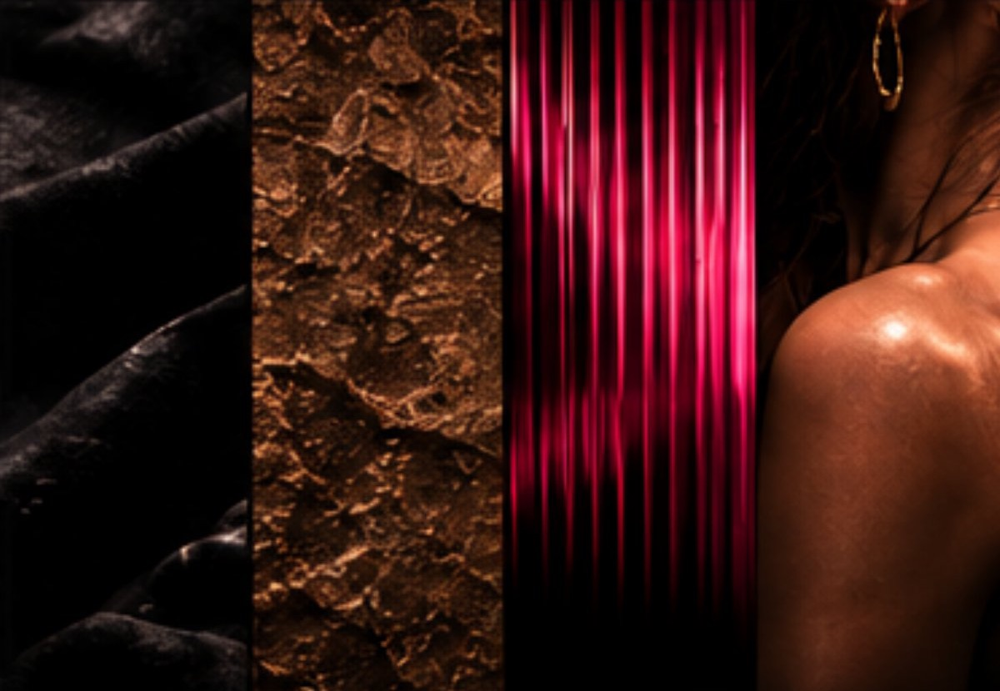
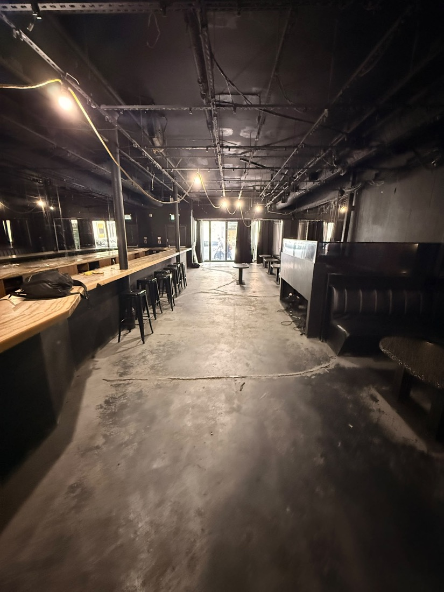
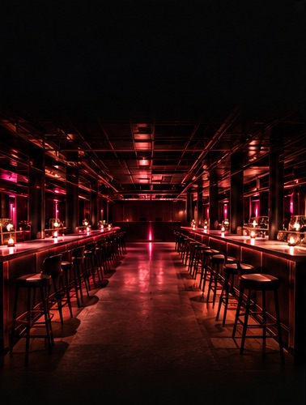

Propuesta · Lanzamiento y operación
Del brief a la noche.
Ya tienen una doctrina clara. Esta propuesta cubre lo que falta para que el 394 Saint-Jacques se viva como la describen: la imagen real, las piezas de marca, la apertura y el contenido de cada mes.

Lo que ya construyeron
No vamos a reinventar a MIA.
Leímos el Brand Brief V1.1 y las respuestas de Mauricio al cuestionario. Lo que el brief marca como bloqueado lo respetamos tal cual y es la base de todo lo que proponemos.
Posicionamiento
Bar à cocktails nocturne raffiné et supper club
Viejo Montreal, inspiración latinoamericana. El cóctel es el centro.
La noche
Same MIA. Different temperature.
Séduction, Momentum, Célébration. Una sola noche que sube sin cortes.
Sistema visual
The pulse must be earned.
Dark, Relic, Pulse y Skin. El rosa se reserva para cuando la noche lo pide.
Las personas
People are the Pulse.
El misterio es del lugar; la calidez, de la gente. Sensual por el comportamiento, nunca por la exposición.
La voz
Suggest. Never Explain.
Elegante, reducida, evocadora. En francés e inglés.
Los límites
Pas Tulum. Pas Vegas. Pas Miami.
Sin personaje, sin tema cultural, sin sobrebranding.

Lo que falta
El brief dice cómo se siente MIA. Falta que se vea.
- El tono del PulseEl brief lo deja "à développer". Hoy no hay un rosa definido ni reglas de cuánto y cuándo aparece.
- La imagen realTodas las imágenes del brief son conceptuales. MIA todavía no tiene una sola foto propia de su sala, sus cócteles o su gente.
- Las aplicacionesCarta, señalética, invitaciones, redes y web. Es lo que el cliente toca y lee cada noche.
- El lanzamientoHay una secuencia (soft open, influencer night, opening) pero no un plan de canales, contenido y calendario.
El tiempo. "Abrir en un mes" pone el soft open a mediados de diciembre: temporada de fiestas de empresa y, dos semanas después, Nochevieja. Es la mejor ventana posible para abrir y deja muy poco margen. Por eso la Fase 1 empieza por lo que tiene que existir antes de la primera noche.


Cómo trabajamos
Cada pieza pasa por su filtro:
Does this make the night better?
Y por su jerarquía. Primero que funcione (reservar, pedir, llegar), luego la experiencia, luego la marca y al final la decoración.
Fase 1 · Lanzamiento · de hoy a la apertura
Que la primera noche ya se vea como MIA.
1.1El Pulse y el kit de marca
- Tono exacto del rosa Pulse, probado en pantalla, impresión y luz de la sala.
- Reglas de uso: cuánto Pulse en cada movimiento de la noche y dónde nunca aparece.
- Tipografías definitivas y logo en vector, en todas sus versiones.
- Guía corta de una página para el equipo y proveedores.
Sin esto, cada proveedor elige su propio rosa y la regla the pulse must be earned se pierde en la primera semana.
1.2Piezas para abrir
- Carta de cócteles y comida en FR/EN, impresa y en QR.
- Señalética esencial: entrada, baños, reservas.
- Invitaciones para soft open, influencer night y opening.
- Plantillas de Instagram (posts, stories, reels) listas para usar.
Todo en la voz del brief: sugerir sin explicar, y que pedir y orientarse sea fácil.
1.3La primera imagen real
- Sesión de foto y video de la sala terminada: barras, cocina abierta, luz, materiales.
- Cócteles y platos de la carta, fotografiados en la sala.
- Cobertura de las primeras noches con gente real, con la regla del brief: la cámara observa la conexión, no la crea.
Reemplaza las imágenes conceptuales por MIA de verdad. Es el material de toda la campaña y de la web.
1.4Web MIA en FR/EN
- Reservar, ver la carta, horarios y cómo llegar, en dos toques desde el celular.
- Francés por defecto e inglés. Sin español, como pide la voz de MIA.
- Panel simple para que ustedes cambien la carta, los horarios y los eventos.
La web es Function antes que Brand: su trabajo es llenar las mesas.
1.5 · Campaña de apertura
Suggest. Never Explain. Contada como su propia noche.
La campaña sigue los tres movimientos del brief. MIA no se presenta: se deja descubrir, como pidió Mauricio.
Séduction · teaser
Piezas que muestran sin explicar: texturas Dark y Relic, una barra, una copa, la dirección sin fecha. Instagram se abre limpio y en silencio.
Momentum · revelación
Fecha, reservas abiertas y web en línea. Soft open de una semana con lista de invitados y la primera cobertura real.
Célébration · apertura
Influencer night con una lista elegida con su filtro, activación con Clase Azul y official opening con prensa junto a Leo. Después, fiestas de diciembre y Nochevieja.
Calendario
Cinco semanas hasta la noche de apertura.
Fechas estimadas a partir de "abrir en un mes". Se ajustan en cuanto tengan la fecha real.
Semana 1desde el 16 nov
ArranqueReunión de alcance, recibimos sus archivos, definimos el Pulse y el kit de marca, planeamos la sesión de fotos.
Semanas 2–323 nov – 6 dic
Producción y teaserCarta, invitaciones, plantillas y web. Empieza el teaser en Instagram. Sesión de fotos en cuanto la sala esté lista.
Semana 47 – 13 dic
RevelaciónFecha anunciada, web y reservas abiertas, invitaciones enviadas.
Semana 5~14 – 20 dic
Soft openUna semana de noches reales con cobertura de foto y video.
Apertura~21 dic
Influencer night y official openingActivación Clase Azul, prensa y recap. Campaña de fiestas y Nochevieja.
Eneroen adelante
Empieza la Fase 2Operación mensual con el material y el ritmo de la apertura.
Fase 2 · Operación mensual · desde enero
Que cada semana haya una razón para volver.
2.1Contenido de la noche
- Sesiones mensuales de foto y video en noches reales.
- Publicaciones, reels y stories repartidos en los tres movimientos: más Séduction temprano en la semana, más Célébration el fin de semana.
- Cócteles nuevos y platos de la carta con su propia pieza.
2.2Redes y comunidad
- Calendario mensual aprobado por ustedes antes de publicar.
- Respuesta a mensajes y comentarios en la voz de MIA.
- Make people feel expected también en línea: reconocer a quien vuelve.
2.3Noches y eventos
- Anuncio y cobertura de las noches con DJ.
- Preparar el regreso de los Mercredis Moomba cuando decidan lanzarlos.
- Fechas clave: San Valentín, cumpleaños y grupos de celebración.
2.4Web y resultados
- Carta, horarios y eventos siempre al día en la web.
- Reporte mensual simple: reservas desde la web, alcance, seguidores y qué contenido funcionó.
El volumen exacto (número de sesiones, publicaciones y reels) lo definimos juntos según su presupuesto.
Para arrancar
Lo que necesitamos de ustedes.
Logo en archivo originalVector (AI, SVG o PDF), si existe.
Documento de colores y visuales del localLos que mencionan en WhatsApp.
Fecha objetivo del soft openAunque sea tentativa, ordena todo el calendario.
Carta y preciosCócteles, comida y botellas, aunque sea en borrador.
Acceso a Instagram y dominio webO los creamos juntos si todavía no existen.
Contactos de Clase Azul y prensaPara coordinar la activación y el opening con Leo.
Lista de invitadosSoft open, influencer night y opening.
Presupuesto de marketingPara dimensionar la Fase 2.
Siguiente paso
Una reunión para fijar la fecha y encender el Pulse.
En 45 minutos validamos el alcance, la fecha de apertura y el volumen mensual. Con eso les presentamos la inversión de cada fase por separado, para que puedan empezar por la Fase 1.
Inversión